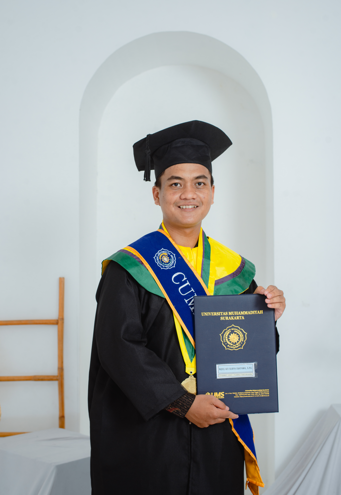

Tentang Saya

Nama: Nofu Afi Surya Ekatama
Program: PPG Calon Guru bidang Informatika
Institusi: Universitas Muhammadiyah Surakarta (UMS)
Periode PPG: 2026–sekarang
Email: Suryaeka1928@gmail.com
Saya merupakan lulusan S1 Pendidikan Teknik Informatika, Universitas Muhammadiyah Surakarta (UMS), tahun 2020–2024. Saat ini, saya sedang menempuh Pendidikan Profesi Guru (PPG) Calon Guru bidang Informatika di UMS. Ketertarikan saya pada pendidikan dan teknologi berkembang melalui pengalaman belajar, kegiatan organisasi, pengabdian masyarakat, serta praktik mengajar.
Pengalaman tersebut menguatkan pandangan saya bahwa teknologi bukan sekadar alat untuk menyampaikan materi, tetapi dapat menjadi sarana untuk menghadirkan pengalaman belajar yang aktif, kreatif, dan bermakna. Dalam pembelajaran Informatika, saya berupaya membantu peserta didik memahami konsep, mengembangkan berpikir komputasional, memecahkan masalah secara sistematis, serta menggunakan teknologi secara bijak.
Saya terus belajar untuk menjadi pendidik yang reflektif, adaptif, dan mampu merancang pembelajaran yang memperhatikan kebutuhan serta potensi peserta didik.
“Belajar, bertumbuh, dan memberi manfaat.”